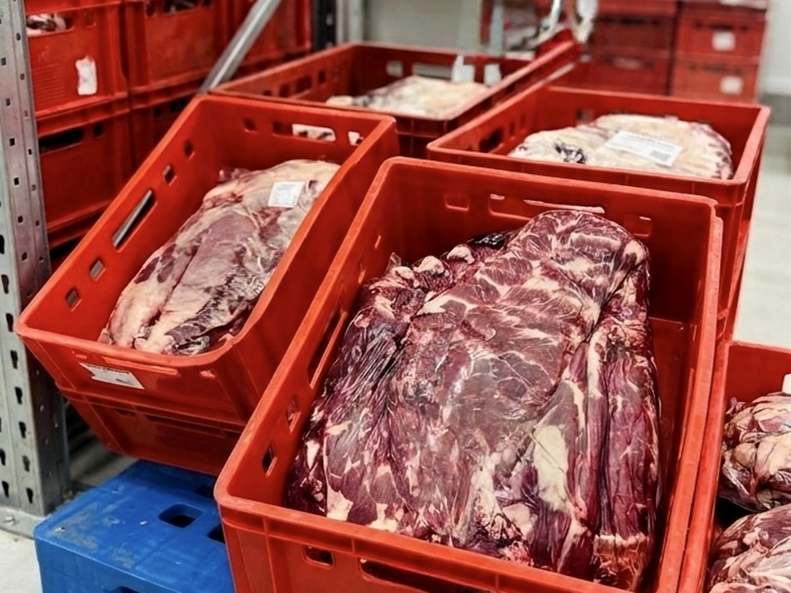
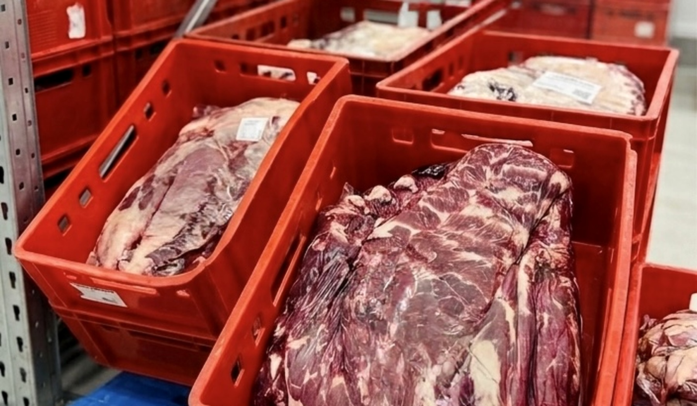
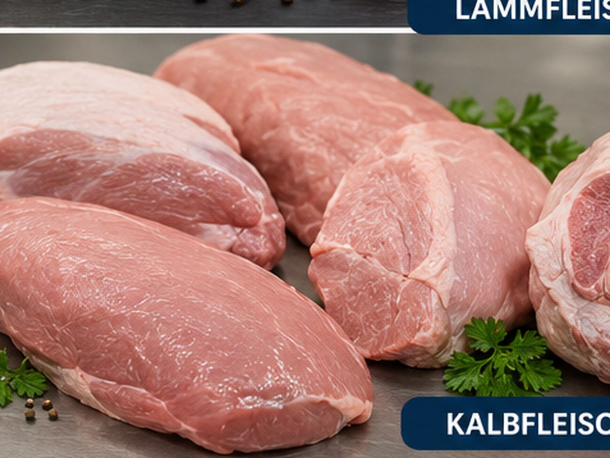
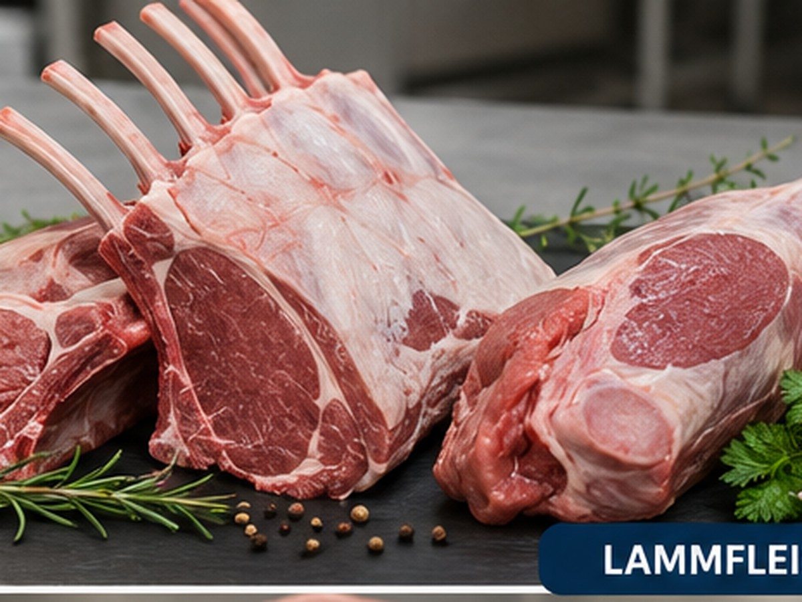
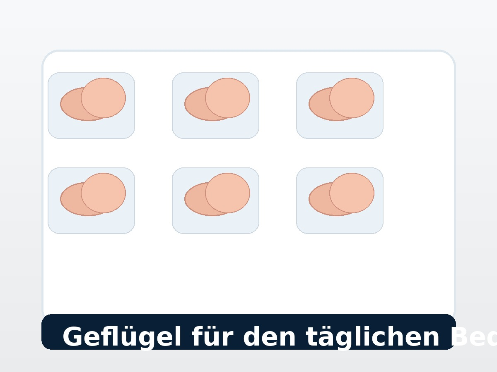
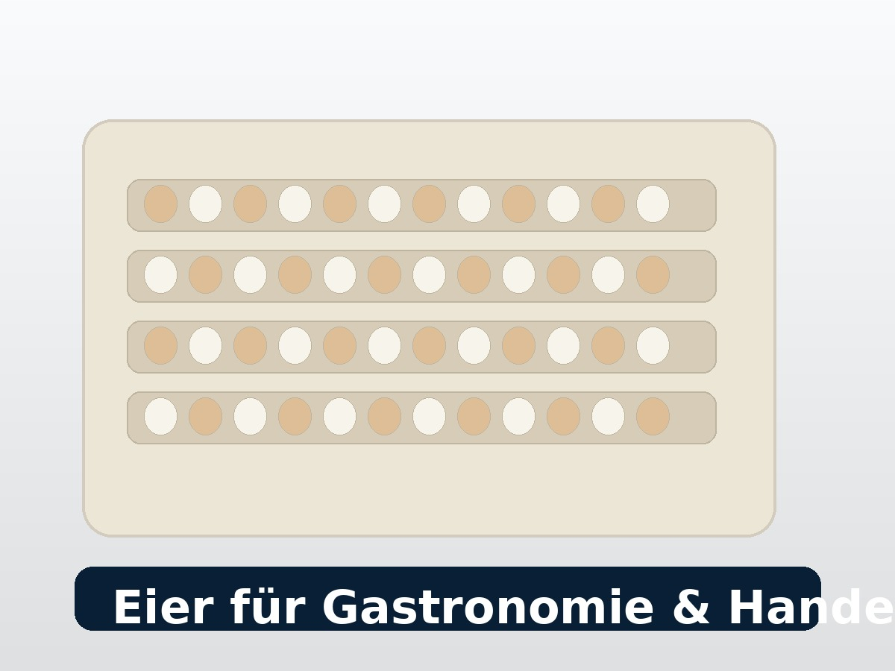
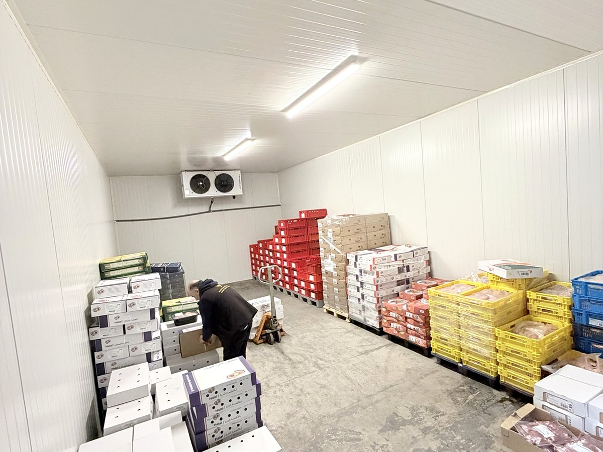
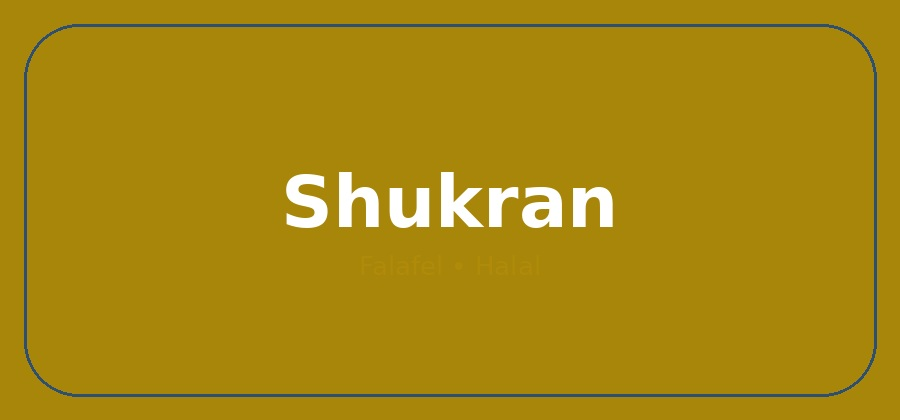
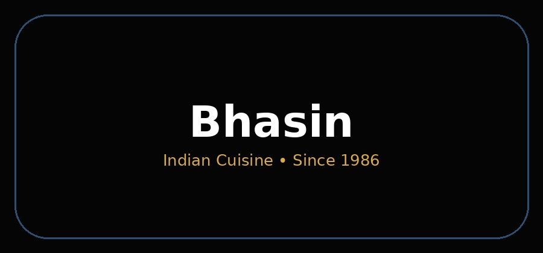

01
Jungbulle
Kugel, Brust, Entrecôte, Roastbeef, Schulter und weitere Zuschnitte.

TDB FOOD · MEAT & MORE
Fleisch- und Lebensmittelgroßhandel aus Köln.
Eigene Logistik. Lieferung in ganz NRW.
SEIT 2013
Wir beliefern Restaurants, Imbisse, Supermärkte und Großküchen mit frischer Ware und kurzen Wegen.
UNSER SORTIMENT
Ausgewählte Ware für den professionellen Bedarf.

Kugel, Brust, Entrecôte, Roastbeef, Schulter und weitere Zuschnitte.

Hochwertige Zuschnitte für Gastronomie und Lebensmittelhandel.

Keule, Schulter, Kotelett, Hals, Rippen und mehr.

Hähnchen, Pute, Brust, Keule, Flügel und ganze Hähnchen.

Eier und ausgewählte Lebensmittel für den täglichen Bedarf.

KÜHLKETTE
Kontrollierte Lagerung und zuverlässige Warenbewegung – vom Kühlhaus bis zum Kunden.
EIGENE LOGISTIK
Direkte Auslieferung mit eigenen Kühlfahrzeugen und persönlichen Ansprechpartnern.

AUS KÖLN FÜR NRW
Köln, Bonn, Düsseldorf, Leverkusen, Bergisch Gladbach, Mönchengladbach, Hürth, Frechen, Wesseling und weitere Städte nach Absprache.

REFERENZEN


Weitere Referenzen ergänzen wir nur mit den final freigegebenen Original-Logos.
TDB FOOD
Schreib uns direkt per WhatsApp oder ruf uns an.